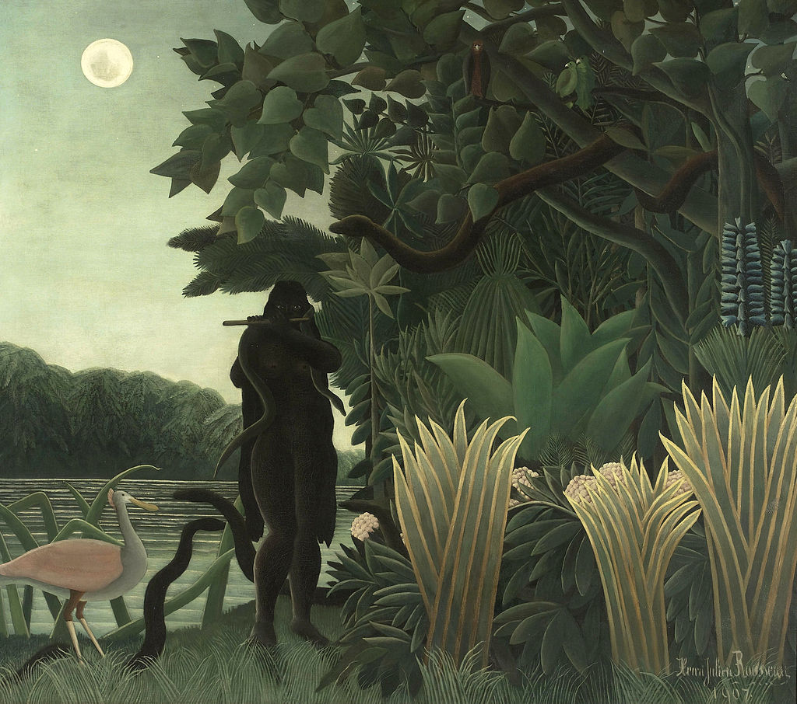

<head>
<meta charset="UTF-8" />
<meta name="keywords" content="drawing, painting" />
<meta name="description" content="drawings by Sunjy" />
<title>Sunjy</title>
<link rel="shortcut icon" type="image/x-icon" href="../../mImages/mCommon/favicon.ico" media="screen" />
<link rel="stylesheet" type="text/css" href="../../mCsses/mCommon/mCssA.css" />
<link rel="stylesheet" type="text/css" href="../../mCsses/mCommon/mCssB.css" />
<link rel="stylesheet" type="text/css" href="../../mCsses/mCommon/mCssC.css" />
<link rel="stylesheet" type="text/css" href="../../mCsses/mCommon/mCssD.css" />
<link rel="stylesheet" type="text/css" href="../../mCsses/mContent/mCssA.css" />
<link rel="stylesheet" type="text/css" href="../../mCsses/mContent/mCssB.css" />
<link rel="stylesheet" type="text/css" href="../../mCsses/mContent/mCssC.css" />
<link rel="stylesheet" type="text/css" href="../../mCsses/mContent/mCssD.css" />
</head>
<script type="text/javascript" src="../../mScripts/mContent/mContentAA.js" /></script>
<script type="text/javascript" src="../../mScripts/mContent/mContentAB.js" /></script>
<script type="text/javascript" src="../../mScripts/mContent/mContentAC.js" /></script>
<script type="text/javascript" src="../../mScripts/mContent/mContentAD.js" /></script>
<script type="text/javascript"></script> 
<script type="text/javascript">
document.write('<div class="mImgAbsolute"></div>');
/*
document.write('<p class="mFontSizeBColor" />From a white paper...</p>');
document.write('<table class="center"><tr><td>');
document.write('');
document.write('</td></tr></table>');
*/
</script>


<script type="text/javascript">
document.write('<p class="mFontSizeBColor" />The Snake Charmer</p>');
document.write('<p class="mFontSizeSColor" />“The Snake Charmer” by Henri Rousseau depicts a woman with glowing eyes playing the flute in the moonlight by the edge of a dark jungle with a snake extending toward her from a nearby tree. The Musée d’Orsay described the painting as:<br><br>“a black Eve in a disquieting Garden of Eden.”<br><br>Henri Rousseau created a detailed depiction of the jungle back-lit by moonlight from a full moon. The snake, charmed by the music, stretches across the painting.<br><br>The Snake Charmer was Rousseau’s first significant commission and was exhibited in the 1907 Autumn Salon.<br><br>Rousseau had never traveled outside of France, but the exotic plants in the painting resulted from Rousseau’s visits to the Jardin des Plantes and magazines.<br><br>From 1922 to 1936, The Snake Charmer was in the collection of Jacques Doucet.<br></p>');
document.write('<table class="center" /><tr><td>');
document.write('<br>“a black Eve in a disquieting Garden of Eden.”<br><br>Henri Rousseau created a detailed depiction of the jungle back-lit by moonlight from a full moon. The snake, charmed by the music, stretches across the painting.<br><br>The Snake Charmer was Rousseau’s first significant commission and was exhibited in the 1907 Autumn Salon.<br><br>Rousseau had never traveled outside of France, but the exotic plants in the painting resulted from Rousseau’s visits to the Jardin des Plantes and magazines.<br><br>From 1922 to 1936, The Snake Charmer was in the collection of Jacques Doucet.<br>" />');
document.write('</td></tr></table>');
</script>


